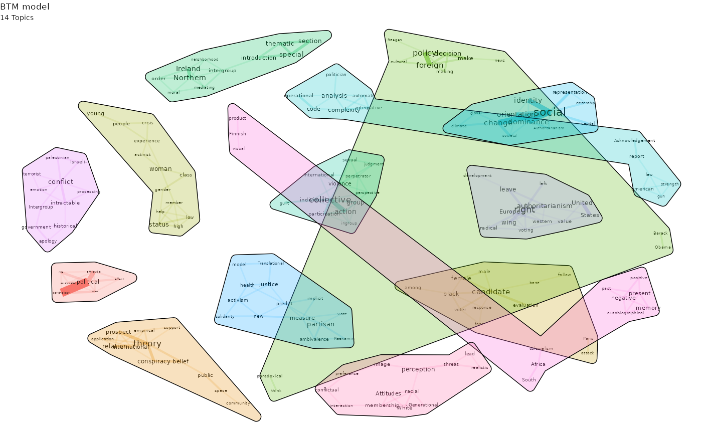
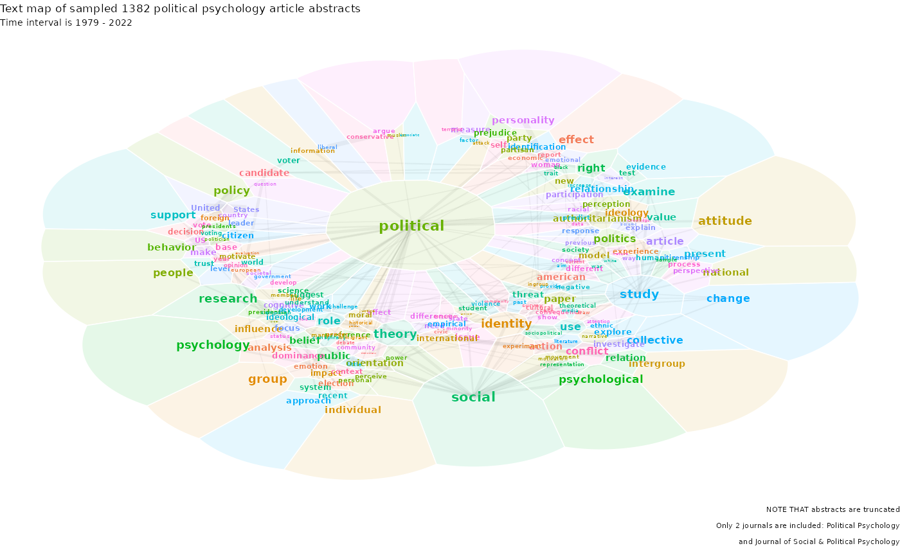
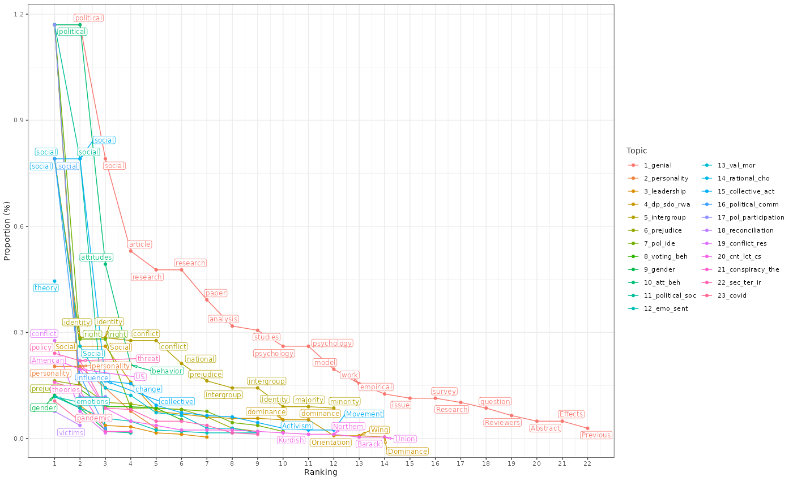
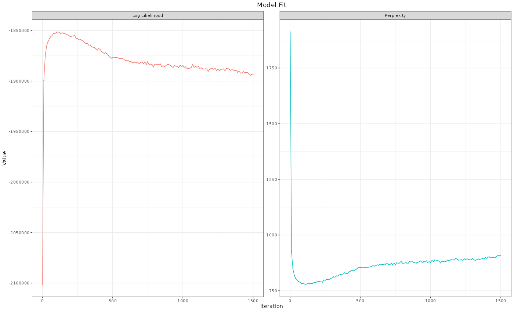
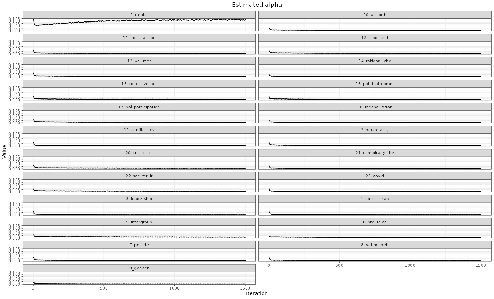
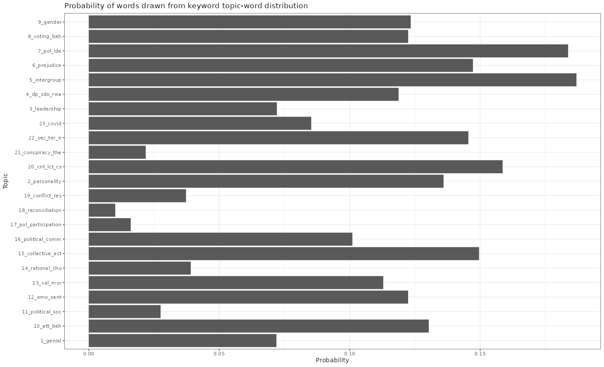

I usually get asked what political psychology is in the tech sector. I answer briefly by saying it is an interdisciplinary field studying political attitudes and behavior, mainly with the research methods of psychology. That is sort of a brush-off answer, though. The best way of describing political psychology is by answering the following questions.
In an earlier blog post, I gave a glimpse of who political psychologists are. In this post, I am answering the latter question.
To do that, I pulled a sample of 1382 academic article abstracts published between 1979 – 2022 from two prominent political psychology journals – namely Political Psychology and Journal of Social & Political Psychology.
God knows how many topics the best solution would be for summarizing the text content. Also, the abstracts are truncated, so your typical topic models would run into many pitfalls. Instead of going down that rabbit hole, I clustered article titles to have a heuristic idea of what I was looking at. I’d say anywhere between 10-14 is plausible – not a bad start.
In the next step, I obtained the following result after trying bi-term topic models on the titles.

Topic modeling for short texts is super practical. In our case, it gives a good glimpse of what might be in there but is not fully informative.
I kept digging with one of my favorite techniques for text visualization: a text landscape, also known as the text map. It looks a little something like the following.

The text landscape graph is pretty and informative to an eye familiar with the political psychology literature. It should also give an outsider an impression of political psychology as well.
That being said, the interpretation of this type of graph borders on aridity. Plus, it is potentially misleading.
If you give this info a push with a semi-supervised topic model (keyword-assisted topic models, preceded by a fully unsupervised model), things become neater. Plus, we can check model fit and examine diagnostics.
Turns out I can account for 23 topics (+ 5 residual topics). Quite a few more topics than what the EDA hinted at. Here is a snapshot from the dictionary I used.

Well, clearly, there is some overfitting, as can be seen from the log-likelihood and perplexity, but hey, I am a political psychologist; I have a good guestimate of which research topics from the literature probably ended up in the sample and which n-grams are associated with the research topics.

Below are the alphas, which are stabilizing just fine for almost all topics except the genial topic which is supposed to encapsulate all the frequent vocabulary.

And finally, the probabilities of words drawn from the keyword topic-word distribution are pretty good.

So, what do political psychologists study? What did we find in the texts?
Attitude-behavior link and how they change; political socialization; emotions & sentiments in politics, specific theories about values & morality, voting behavior sometimes intersecting with behavioral economics (prospect theory, rational choice etc.); collective action, political communication; political ideology; political participation; conflict resolution and reconciliation; a lot of individual-differences stuff (personality, specific traits like social dominance orientation, right-wing authoritarianism); conspiracy beliefs; international relations & security; inter-group relations; prejudice; leadership style; gender in politics and of course recently Covid.
I think that should provide a broad perspective to an outsider.
It looks to me like this sample is missing some early works (70s-80s) that had a lot of psychoanalytic stuff; niche topics within inter-group relations like national identity, nationalistic & patriotic attitudes; some more recent populism stuff; small-group dynamics (decision-making in small groups – mostly relevant for foreign policy decision-making); transdisciplinary work involving biology, neuroscience and genetics (works using twin and family samples).
I only sampled specific pol psy journals. There are dozens of other journals that publish pol psy work. Below are three specific article selections from other journals.
Aarøe, L., & Petersen, M. B. (2013). Hunger Games: Fluctuations in Blood Glucose Levels Influence Support for Social Welfare. Psychological Science, 24(12), 2550–2556. https://doi.org/10.1177/0956797613495244
SILVA, B., & PROKSCH, S. (2021). Fake It ‘Til You Make It: A Natural Experiment to Identify European Politicians’ Benefit from Twitter Bots. American Political Science Review, 115(1), 316-322. doi:10.1017/S0003055420000817
WUTTKE, A., SCHIMPF, C., & SCHOEN, H. (2020). When the Whole Is Greater than the Sum of Its Parts: On the Conceptualization and Measurement of Populist Attitudes and Other Multidimensional Constructs. American Political Science Review, 114(2), 356-374. doi:10.1017/S0003055419000807